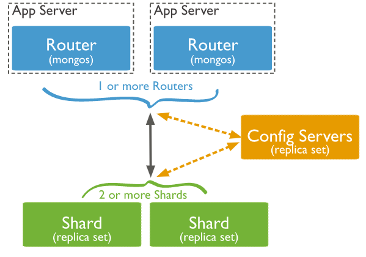
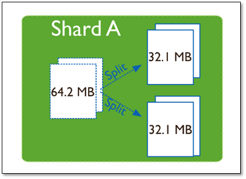
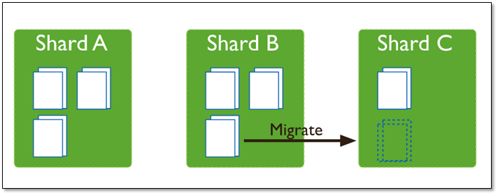

3.6.1. 常用¶
分片的目的:
高数据量和吞吐量的数据库应用会对单机的性能造成较大压力,大的查询量会将单机的CPU耗尽
大的数据量对单机的存储压力较大,最终会耗尽系统的内存而将压力转移到磁盘IO上
为了解决这些问题,有两个基本的方法: 垂直扩展和水平扩展
1. 垂直扩展：增加更多的CPU和存储资源来扩展容量
2. 水平扩展：将数据集分布在多个服务器上。水平扩展即分片
分片设计思想:
分片为应对高吞吐量与大数据量提供了方法。
使用分片减少了每个分片需要处理的请求数，因此，通过水平扩展，集群可以提高自己的存储容量和吞吐量。
举例来说，当插入一条数据时，应用只需要访问存储这条数据的分片.
使用分片减少了每个分片存储的数据。
例如，如果数据库1tb的数据集，并有4个分片，然后每个分片可能仅持有256 GB的数据。
如果有40个分片，那么每个切分可能只有25GB的数据。
分片机制提供了如下三种优势:
1.对集群进行抽象，让集群“不可见”:
MongoDB自带了一个叫做mongos的专有路由进程。
mongos就是掌握统一路口的路由器，其会将客户端发来的请求准确无误的路由到集群中的一个或者一组服务器上
同时会把接收到的响应拼装起来发回到客户端。
2.保证集群总是可读写:
MongoDB通过多种途径来确保集群的可用性和可靠性。
将MongoDB的分片和复制功能结合使用，在确保数据分片到多台服务器的同时，也确保了每份数据都有相应的备份
这样就可以确保有服务器换掉时，其他的从库可以立即接替坏掉的部分继续工作。
3.使集群易于扩展:
当系统需要更多的空间和资源的时候，MongoDB使我们可以按需方便的扩充系统容量
分片集群架构¶
Config Server:
存储集群所有节点、分片数据路由信息。默认需要配置3个Config Server节点。
所有存、取数据的方式，所有shard节点的信息，分片功能的一些配置信息。可以理解为真实数据的元数据。
Mongos:
提供对外应用访问，所有操作均通过mongos执行。一般有多个mongos节点。数据迁移和数据自动平衡。
数据路由，和客户端打交道的模块。mongos本身没有任何数据，他也不知道该怎么处理这数据，去找config server
Mongoshard:
存储应用数据记录。一般有多个Mongod节点，达到数据分片目的。
真正的数据存储位置，以chunk为单位存数据。
MongoDB 分片集群的三个组件:
1. shard
每个分片是整体数据的一部分子集。每个分片都可以部署为副本集
强烈建议在生产环境下将分片部署为副本集且最少部署 2 个分片
2. mongos
充当查询路由器，提供客户端应用程序和分片集群之间的接口
应用程序直接连接 mongos 即可，可以部署一个或多个
3. config servers
配置服务器存储集群的元数据和配置（包括权限认证相关）
从 MongoDB 3.4 开始，必须将配置服务器部署为副本集
（CSRS，全称是 Config Servers Replica Set）

MongoDB 分片集群的架构图¶
集群中数据分布¶
chunk的产生，会有以下两个用途:
1. Splitting：当一个chunk的大小超过配置中的chunk size时，
MongoDB的后台进程会把这个chunk切分成更小的chunk，从而避免chunk过大的情况
2. Balancing：在MongoDB中，balancer是一个后台进程，负责chunk的迁移，从而均衡各个shard server的负载
系统初始1个chunk，chunk size默认值64M,生产库上选择适合业务的chunk size是最好的。
MongoDB会自动拆分和迁移chunks。
分片集群的数据分布（shard节点）:
1. 使用chunk来存储数据
2. 进群搭建完成之后，默认开启一个chunk，大小是64M，
3. 存储需求超过64M，chunk会进行分裂，如果单位时间存储需求很大，设置更大的chunk
4. chunk会被自动均衡迁移
chunksize的选择:
适合业务的chunksize是最好的
chunk的分裂和迁移非常消耗IO资源；chunk分裂的时机：在插入和更新，读数据不会分裂
chunksize的选择:
小的chunksize:
数据均衡是迁移速度快，数据分布更均匀。数据分裂频繁，路由节点消耗更多资源
大的chunksize:
数据分裂少。数据块移动集中消耗IO资源。通常100-200M
chunk分裂及迁移¶
随着数据的增长，其中的数据大小超过了配置的chunk size，默认是64M，则这个chunk就会分裂成两个。数据的增长会让chunk分裂得越来越多。

这时候，各个shard 上的chunk数量就会不平衡。这时候，mongos中的一个组件balancer 就会执行自动平衡。把chunk从chunk数量最多的shard节点挪动到数量最少的节点。

chunkSize 对分裂及迁移的影响:
chunkSize 越小，chunk 分裂及迁移越多，数据分布越均衡；
反之
chunkSize 越大，chunk 分裂及迁移会更少，但可能导致数据分布不均。
数据区分¶
分片键shard key¶
MongoDB中数据的分片是:
以集合为基本单位的，集合中的数据通过片键（Shard key）被分成多部分
其实片键就是在集合中选一个键，用该键的值作为数据拆分的依据
所以一个好的片键对分片至关重要,片键必须是一个索引
1. 一个自增的片键对:
写入和数据均匀分布就不是很好，因为自增的片键总会在一个分片上写入，后续达到某个阀值可能会写到别的分片。
但是按片键查询会非常高效
例: Mongo的_id高位是时间戳，是持续递增的
2. 随机片键:
对数据的均匀分布效果很好。注意尽量避免在多个分片上进行查询。在所有分片上查询，mongos会对结果进行归并排序。
对集合进行分片时，你需要选择一个片键:
片键是每条记录都必须包含的，且建立了索引的单个字段或复合字段
MongoDB按照片键将数据划分到不同的数据块中，并将数据块均衡地分布到所有分片中。
为了按照片键划分数据块，MongoDB使用:
1. 基于范围的分片方式
2. 或者 基于哈希的分片方式。
注意:
分片键是不可变
分片键必须有索引
分片键大小限制51bytes
分片键用于路由查询
MongoDB不接受已进行collection级分片的collection上插入无分片键的文档（也不支持空值插入）
以范围为基础的分片¶
范围分片（range sharding）:
对于基于范围的分片，MongoDB按照片键的范围把数据分成不同部分
说明:
假设有一个数字的片键:想象一个从负无穷到正无穷的直线，每一个片键的值都在直线上画了一个点。
MongoDB把这条直线划分为更短的不重叠的片段，并称之为数据块，每个数据块包含了片键在一定范围内的数据。
在使用片键做范围划分的系统中，拥有”相近”片键的文档很可能存储在同一个数据块中，因此也会存储在同一个分片中。
基于哈希的分片¶
分片过程中利用哈希索引作为分片的单个键:
哈希分片的片键只能使用一个字段，而基于哈希片键最大的好处就是保证数据在各个节点分布基本均匀。
分离性更好:
对于基于哈希的分片，MongoDB计算一个字段的哈希值，并用这个哈希值来创建数据块。
在使用基于哈希分片的系统中，拥有”相近”片键的文档很可能不会存储在同一个数据块中，因此数据的分离性更好一些。
Hash分片与范围分片互补:
能将文档随机的分散到各个chunk，充分的扩展写能力，弥补了范围分片的不足
但不能高效的服务范围查询，所有的范围查询要分发到后端所有的Shard才能找出满足条件的文档。
分片键选择建议¶
递增的sharding key:
数据文件挪动小。（优势）
因为数据文件递增，所以会把insert的写IO永久放在最后一片上，造成最后一片的写热点。
同时，随着最后一片的数据量增大，将不断的发生迁移至之前的片上。
随机的sharding key:
数据分布均匀，insert的写IO均匀分布在多个片上。（优势）
大量的随机IO，磁盘不堪重荷。
混合型key:
大方向随机递增，小范围随机分布。
为了防止出现大量的chunk均衡迁移，可能造成的IO压力。
我们需要设置合理分片使用策略（片键的选择、分片算法（range、hash））
Note
分片键是不可变、分片键必须有索引、分片键大小限制512bytes、分片键用于路由查询。MongoDB不接受已进行collection级分片的collection上插入无分片键的文档（也不支持空值插入）
分片集群的操作¶
不同分片键的配置¶
范围片键:
admin> sh.shardCollection("数据库名称.集合名称",key : {分片键: 1} )
或
admin> db.runCommand( { shardcollection : "数据库名称.集合名称",key : {分片键: 1} } )
实例:
admin > sh.shardCollection("test.vast",key : {id: 1} )
或
admin> db.runCommand( { shardcollection : "test.vast",key : {id: 1} } )
哈希片键:
admin > sh.shardCollection( "数据库名.集合名", { 片键: "hashed" } )
实例:
admin> db.vast.ensureIndex( { a: "hashed" } )
admin > sh.shardCollection( "test.vast", { a: "hashed" } )
分片集群的操作¶
判断是否Shard集群:
admin> db.runCommand({ isdbgrid : 1})
列出所有分片信息:
admin> db.runCommand({ listshards : 1})
列出开启分片的数据库:
admin> use config
config> db.databases.find( { "partitioned": true } )
config> db.databases.find() //列出所有数据库分片情况
查看分片的片键:
config> db.collections.find()
{
"_id" : "test.vast",
"lastmodEpoch" : ObjectId("58a599f19c898bbfb818b63c"),
"lastmod" : ISODate("1970-02-19T17:02:47.296Z"),
"dropped" : false,
"key" : {
"id" : 1
},
"unique" : false
}
查看分片的详细信息:
admin> db.printShardingStatus()
或
admin> sh.status()
删除分片节点:
sh.getBalancerState()
mongos> db.runCommand( { removeShard: "shard2" } )
balance操作¶
查看mongo集群是否开启了 balance 状态:
mongos> sh.getBalancerState()
true
// 当然你也可以通过在路由节点mongos上执行sh.status() 查看balance状态。
// 设置balance为true
mongos> sh.setBalancerState( true )
如果balance开启，查看是否正在有数据的迁移,连接mongo集群的路由节点:
mongos> sh.isBalancerRunning()
false
关闭balance:
sh.stopBalancer()
自动分片平衡¶
Note
mongodb在做自动分片平衡的时候，或引起数据库响应的缓慢，可以通过禁用自动平衡以及设置自动平衡进行的时间来解决这一问题。
禁用分片的自动平衡:
> use config > db.settings.update( { _id: "balancer" }, { $set : { stopped: true } } , true );自定义 自动平衡进行的时间段:
修改balance 窗口的时间: > use config > db.settings.update( { _id: "balancer" }, { $set: { activeWindow : { start : "<start-time>", stop : "<stop-time>" } } }, { upsert: true } ) 实例: > use config > db.settings.update( { _id : "balancer" }, { $set : { activeWindow : { start : "21:00", stop : "9:00" } } }, true )删除balance 窗口:
use config db.settings.update({ _id : "balancer" }, { $unset : { activeWindow : true } })
Note
当你设置了activeWindow，就不能用sh.startBalancer() 启动balance。The balancer window must be sufficient to complete the migration of all data inserted during the day. As data insert rates can change based on activity and usage patterns, it is important to ensure that the balancing window you select will be sufficient to support the needs of your deployment.
关于集合的balance¶
关闭某个集合的balance:
sh.disableBalancing("students.grades")
打开某个集合的balance:
sh.enableBalancing("students.grades")
确定某个集合的balance是开启或者关闭:
db.getSiblingDB("config").collections.findOne({_id : "students.grades"}).noBalance;